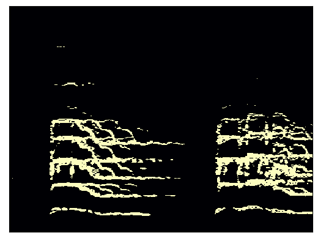
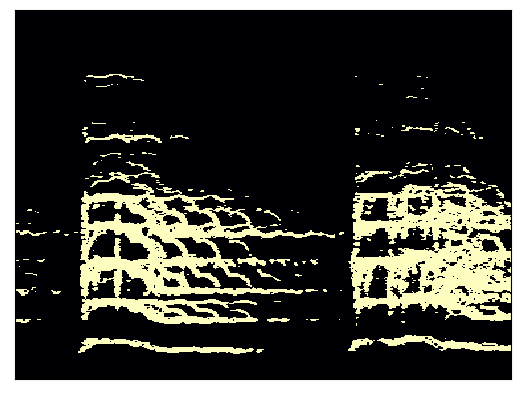
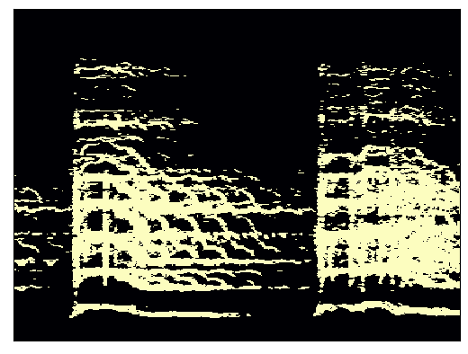
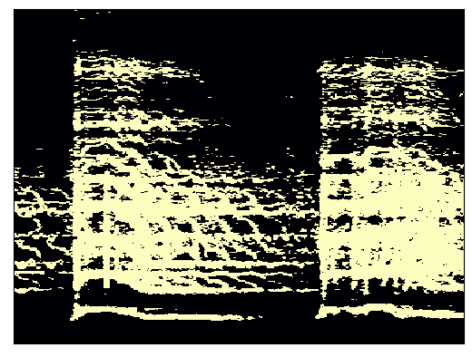
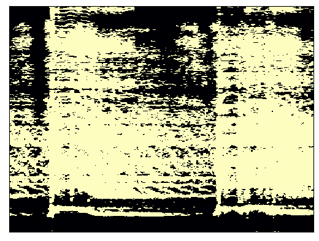

Project Overview
The audio reactive LED display seeks to enhance audio experience by adding visual component. This is done by continously outputing

The audio reactive LED display seeks to enhance audio experience by adding visual component. This is done by continously outputing
System characteristics and their justifications.
Minimal Latency: The time between when the audio is played and when the corresponding data is being displayed should be kept minimal.
Based on studies by the International Telecommunication Union (ITU), the threshold for syncronization error detection is about 45 ms to –125 ms
(audio leading display is indicated as a positive value; audio lagging display is indicated as a negative value). This will be the target range.
User Control: Different audio (or personal preferences) will require different display attributes. Users must be able to change LED display color,
display method, brightness, and frequency bins/instruments displayed for each LED strip. To interface with these contorls, a Python based app will be created.
Instrument Isolation: Frequency alone is not fully representative of how music is percieved. A more accurate segmentation of audio is done through
instruments. Since different instruments can occupy the same frequency bins, Fourier analysis alone can not achieve instrument segmentation/isolation.
For this purpose, a Convolutional Neural Network will be created using the TensorFlow Python library. Frequency bins will be as an option for display.
Modularity: One of the bottlenecks for latency are the digital LED strips. All LED strips are controlled by a single data line and thus
communication with all the LEDs for each update can take a significant amount of time. To resolve this, a modular system will be create consisting of a
main controller processing audio data and sending the data to be displayed by other modular display controllers. This allows audio to be sent to only
one reciever controller and allows for parallel processing.
.
This is the content of section 2.

The convolutional neural network architecture was based on the following article published in Towards Data Science: Audio AI: isolating vocals from stereo music using Convolutional Neural Networks.
This model is designed for single instrument isolation and is demonstrated with vocals. The input to the network is a mixed audio magnitude spectogram and its output is a binary mask
This mask, when applied to the original complex spectogram, isolates the particular instrument.
There is a second article discussing the different possibilites for
expanding this architecture to other instrument groups.
In the article, a pipeline was created to find mixes and corresponding vocal tracks by scraping Youtube
audio and acapella databases. To save time and resources, I chose the free MUSDB18 dataset consisting of 150 .stem files. The available stems were
full mix, vocals, drums, bass, and others. To follow the article, my first CNN iteration was trained and tested for vocal isolation
Each song in the training set, the raw data is normalized and converted to complex spectograms. This was done for both the full mix and for the vocals. From these, a mix without the
the vocals is created by subtracting the isolated vocals from the full mix. The binary mask is created by setting all frequency bins for which the vocal magntiude
is larger than than no-vocal mix magnitude to 1. (db_min)(Assumed). For the input spectogram, if using data augmentation, pitch shifting is applied before converting to the spectogram. The
mix spectogram and binary mask were converted to the Mel scale. A dB scaling may also be applied at this time.





For training, the input was split into multiple samples using a sliding window of time length (ms), moving along the spectogram one frame at time. The output for each sample was
the binary mask's corresponding middle frame of window. This is done to provide enough temporal context to create accurate predicitions. Once split, additional data augmentation
such as added noise and frequency masking could be applied.
Dataset Preprocessing Variable:
n_fft: length of STFT window in samples after padding (Typically left at 4096)
hop_size: number of samples between subsequent STFT (Typically left at 256)
win_length: length of STFT window in samples before 0 padding (Typically left at 1024)
sr: sampleing rate of audio (Typically downsampled from 44100 to 22050)
n_mels: number of mel bins (Typically left at 512)
sample_width: Width of sliding window for indiividal training samples (Left at 25)
output_amin: Lower threshold for dB scaling on output. Higher output_amin signifies
less non-significant spectrum represented in binary mask.
input_amin: Lower threshold for dB scaling on input. Higher output_amin signifies
less non-significant spectrum in input spectogram.
pitch_shift: boolean representing the inclusion of pitch shift data augmentation
percent noise
Due to the amount of variables present, it was decided use the same STFT values for as the article.
The varibles that will be varied include the dB minimum, data augmentation variables, and model hyperparameters
Things that were assumed were the methods for creating the binary mask.
dataset better, data not HQ, create for other isntrucments